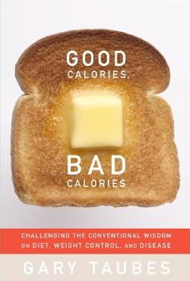
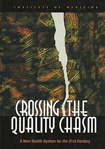
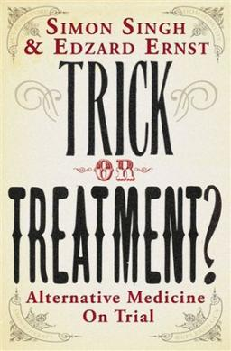
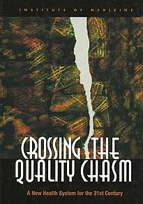
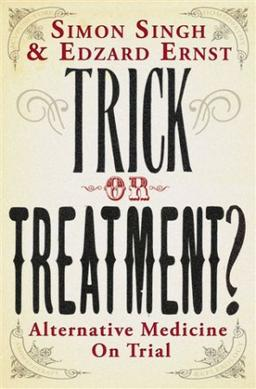

Document
Health and Fitness
Health is defined as a state of physical, mental, and social well being and not merely physical well being. Health and
fitness go hand in hand. We have to stay healthy; we have to keep fit.
We must concentrate on our fitness if we have to maintain our health. Health is wealth, and we must take care of ourselves.
Being healthy does not merely refer to exercising regularly; it is a much vaster concept.
 

Good Calories, Bad Calories The Hundred Year Lie
Crossing the Quality Chasm
Trick or Treatment?
Most people go for the wrong diet in their struggle to lose weight and stay fit. Following fad diets like eating
cabbage soup or onions is not helpful and causes more harm than good. Individuals often skip meals because they
think eating less would help them lose weight.
However, experts have repeatedly impressed upon us the importance of eating correctly. Skipping meals leads to slow
metabolism, and that leads to further weight gain. When our body does not get enough food, it starts storing whatever
food is available as fat. Thus, there is no breakdown of food into energy, and we feel tired and weak.
It is vital to eat our food at proper times. Dieticians suggest us to eat small quantities of food at multiple
times. This helps in proper digestion and assimilation of food. We should intake sufficient green, leafy vegetables
and a lot of water. Water regulates our body processes and facilitates overall functioning.
The first step to staying fit is to follow a balanced diet. Our diet should comprise all essential nutrients,
including carbohydrates, fats, proteins, vitamins, minerals, roughage, and water. Following a balanced diet ensures
our fitness and protects us from diseases by building up our immunity.
We must maintain our health and fitness simultaneously. We have busy schedules, and many of us do not find time to
exercise. Thus, we must find alternative ways of applying. Walking a certain distance, using stairs instead of
elevators, and maintaining a proper sleep schedule are some ways of staying fit. Sleep is crucial for a healthy and
productive life. An individual must sleep for an average duration of eight hours per day.
However, in contrast to conventional thought, staying fit also means we utilize our maximum capacity. Fitness is not
merely physical, and it is also essential to stay emotionally fit. Mental health refers to lower stress levels and
proper ventilation of emotions. Individuals who fail to express themselves suffer from a troubled spirit and repressed
depression. Such conditions may lead to breakdown and panic attacks that affect our health.
Thus, fitness is vital for leading a healthy life. A fit person will have low susceptibility to diseases and will
also function more productively. Therefore, we must concentrate on our health and strive to stay healthy.